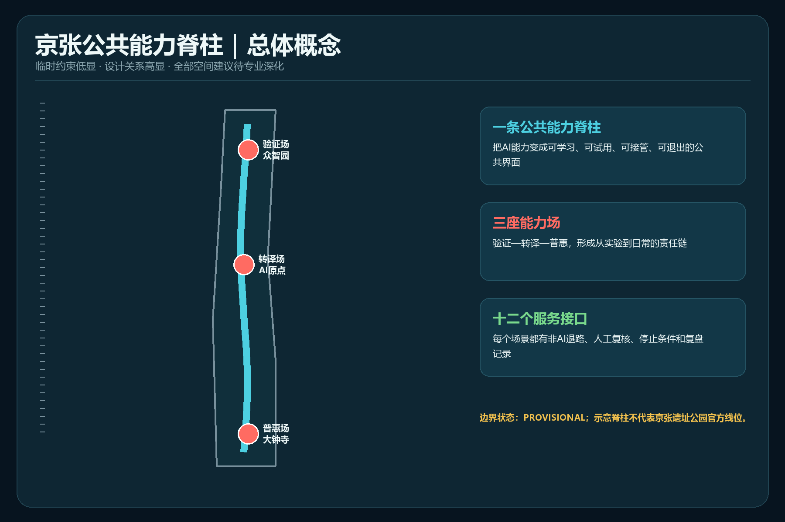
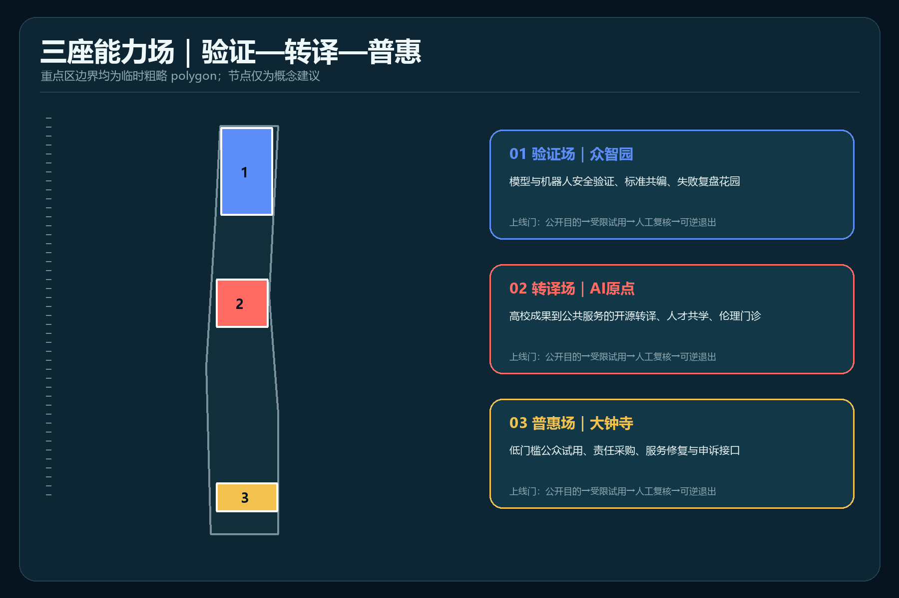
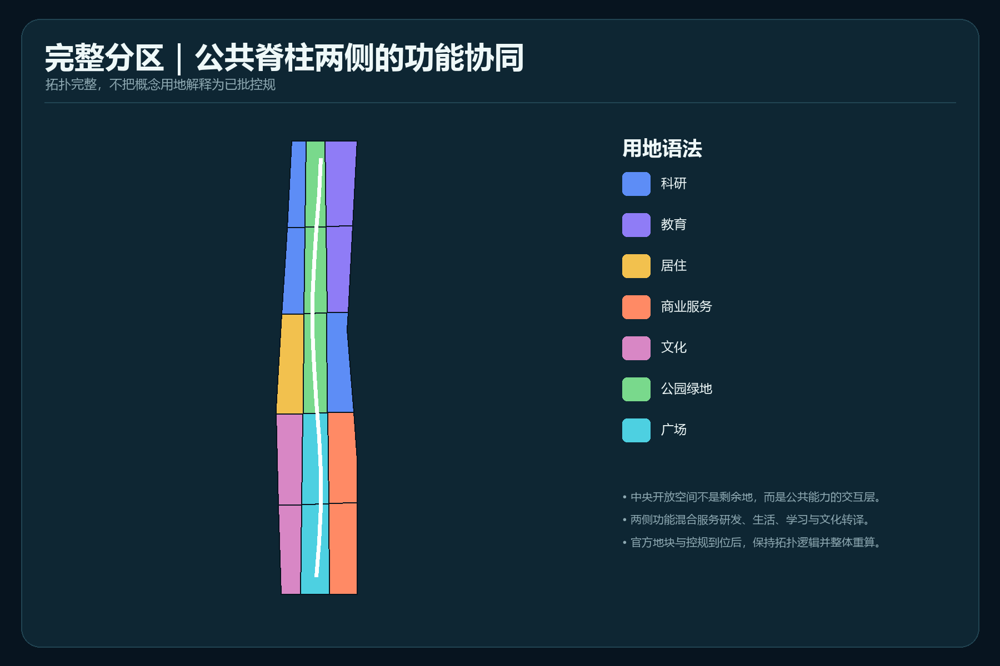
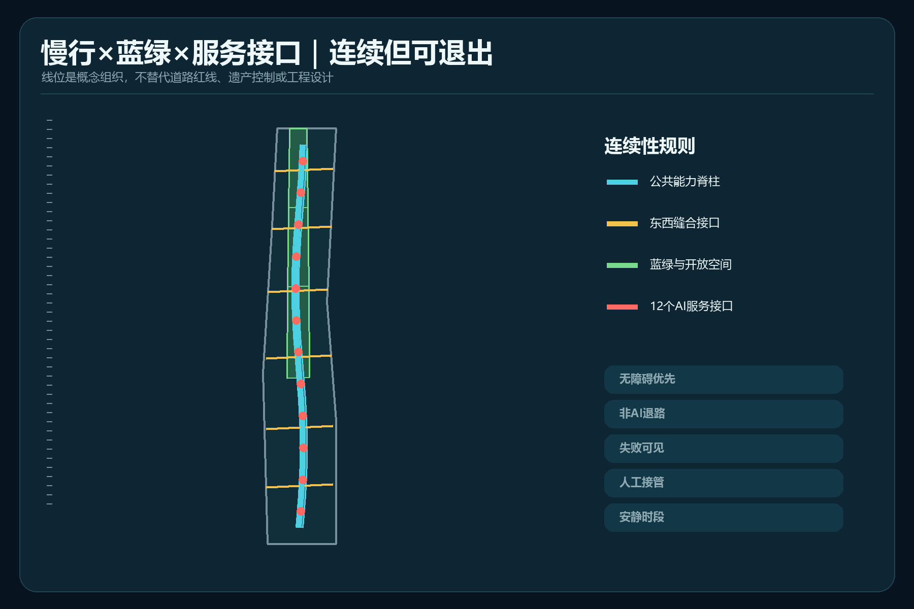
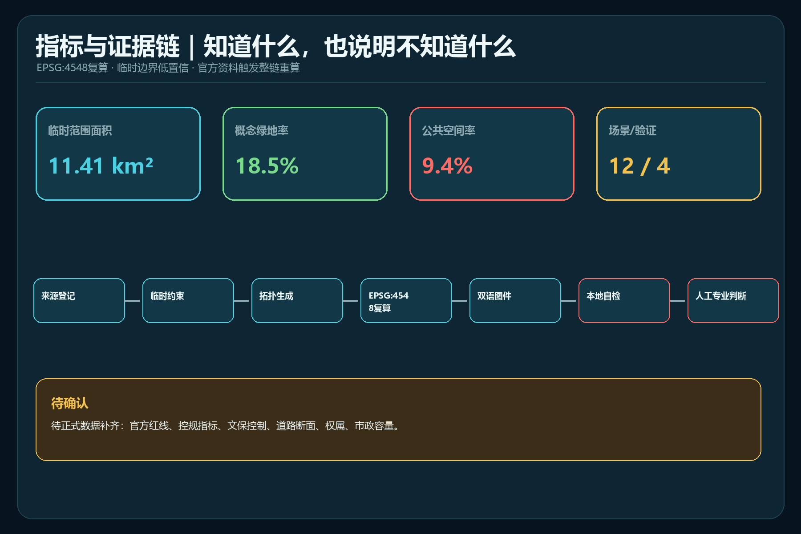

临时边界｜概念建议｜不替代正式规划
京张公共能力脊柱
让每项城市 AI 能力可学习、可试用、可人工接管、可退出、可复盘。
总览地图

三层范围
43.6 km²
统筹研究范围（公告约值）
统筹研究范围（公告约值）
11.4 km²
总体设计范围（公告约值）
总体设计范围（公告约值）
368.4 ha
重点区域范围（公告约值）
重点区域范围（公告约值）
重点区域

用地分区

交通慢行 · 蓝绿公共空间

建筑 · 更新项目
类型化更新占位；不对应现状建筑或权属。
八个项目包通过数据、权属、运营、安全与审批门。
三期为条件触发，不是建设时序承诺。
AI 场景
| 能力场 | 角色 | 代表接口 |
|---|---|---|
| 众智园 | ASSURE | 模型保证步道、机器人路缘实验室 |
| AI原点 | TRANSLATE | 公共服务共驾台、多语转译室 |
| 大钟寺 | SHARE | AI修复咖啡馆、申诉复盘站 |
核心指标
11.413 km²临时 polygon 复算
18.49%概念绿地率
9.41%概念公共空间率
12AI场景卡

任务覆盖
公告1.3/1.4/1.5与agent.1—agent.6全部进入任务矩阵；12场景、4验证、6画像、4地标。
自检状态
LAND_USE_TOPOLOGY · PASS
BILINGUAL_PACKAGE · PASS
BOUNDARY · PROVISIONAL
ALIGNMENT · ISSUE #846 DISCLOSED
来源
OFFICIAL-ANNOUNCEMENT · AGENT-TASKBOOK · SOURCE-REGISTRY · BOUNDARY-SOURCE · NATIONAL STANDARDS · FIVE BACKGROUND CASES
假设
待正式数据补齐：官方红线、重点区、遗产保护、控规、道路、市政、现状建筑、权属与实施主体。